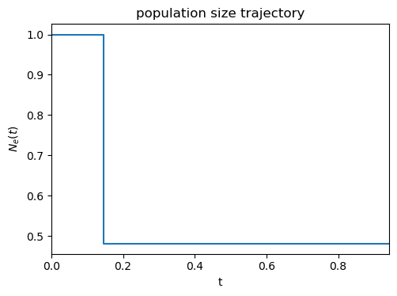

Demography inference
Here we infer a 2-epoch piece-wise constant demography using the SFS. We parametrize the demography by the time of the first population size change and its new population size, starting with Ne = 1 at time 0. For the optimization to work, we specify parameter bounds, a loss function, and the coalescent distribution object in question constructed from the given parameters. We use an SFS with 10 samples, and a Poisson likelihood as loss function.
import phasegen as pg
# observed SFS
observed = pg.SFS([177130, 997, 441, 228, 156, 117, 114, 83, 105, 109, 652])
# create inference object
inf = pg.Inference(
x0=dict(t=1, Ne=1),
bounds=dict(t=(0, 4), Ne=(0.1, 1)),
dist=lambda t, Ne: (
pg.PiecewiseTimeHomogeneousCoalescent(
n=10,
demography=pg.PiecewiseTimeHomogeneousDemography(
pop_sizes=[1, Ne],
times=[0, t]
),
pbar=False,
parallelize=False
)
),
loss=lambda dist: (
pg.PoissonLikelihood().compute(
observed=observed.normalize().polymorphic,
modelled=dist.sfs.mean.normalize().polymorphic
)
)
)
# perform inference
inf.run()
print(inf.result)
Optimizing loss function: 57it [00:00, 78.60it/s]
message: CONVERGENCE: NORM_OF_PROJECTED_GRADIENT_<=_PGTOL
success: True
status: 0
fun: 2.3783845139077373
x: [ 1.454e-01 4.813e-01]
nit: 10
jac: [-1.688e-06 -2.398e-06]
nfev: 63
njev: 21
hess_inv: <2x2 LbfgsInvHessProduct with dtype=float64>
We can now visualize the modelled and observed SFS. The coalescent distribution with the lowest loss can be accessed as dist_inferred.
import fastdfe as fd
s = fd.Spectra.from_spectra(dict(
modelled=inf.dist_inferred.sfs.mean.normalize() * observed.n_polymorphic,
observed=observed
))
s.plot();
<Figure size 512x384 with 0 Axes>
We can also plot to the population size trajectory of our MLE estimate.
inf.dist_inferred.demography.plot(t_max=inf.dist_inferred.tree_height.mean);
